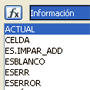
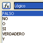
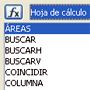
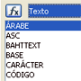

4.2. Clasificación de funciones
Importante
A continuación puedes ver una lista de las categorías que puedes encontrar en el programa OOo Calc con su descripción.
Imagen de elaboración propia
InformaciónEstas funciones devuelven algún tipo de información sobre la celda, la fórmula, el valor o el tipo de dato contenido: ACTUAL, CELDA, FORMULA, INFO, TIPO.
También devuelven valores de verdadero o falso a preguntas sobre la información contenida en la celda o en el rango: ESFÓRMULA, ESTEXTO, ESNÚMERO, ESNOTEXTO.
|
 |
LógicoSon las funciones que se utilizan para realizar operaciones lógicas: FALSO, NO, O, SI, VERDADERO, Y.
|
 |
Hoja de cálculoSon funciones específicas para buscar datos en la hoja de cálculo activa. Son muy útiles cuando la hoja contiene mucha información y no puede visualizarse todo en la pantalla: BUSCAR, COINCIDIR, COLUMNA, FILA, DIRECCIÓN. |
 |
TextoSon funciones orientadas a manejar el texto que se puede introducir en las celdas: HALLAR, CONCATENAR, EXTRAE, ENCONTRAR. También convierte el texto a un código determinado: ÁRABE, ASC, BASE, MONEDA, ROMANO. |
 |
Comprueba lo aprendido
Antes de estudiar algunas funciones, abre la lista de funciones de OOo Calc e investiga un poco.
¿Cuál es la primera y la última función que aparece en cada categoría?
Obra publicada con Licencia Creative Commons Reconocimiento No comercial Compartir igual 4.0